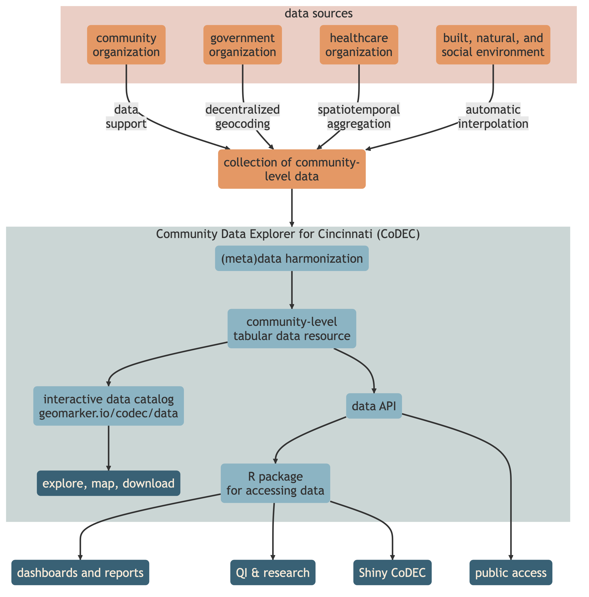

The Community Data Explorer for Cincinnati (CoDEC) is a data repository composed of equitable, community-level data for Cincinnati, Ohio.
Data about the communities in which we live come in different spatiotemporal resolutions and extents and often are not designed with the specific goal of integrating with other data. CoDEC defines specifications for community-level data in an effort to make them more FAIR.1 Operating with a common data specification means that organizations can more easily use methods and tools for harmonizing, storing, accessing, and sharing community-level data. This data can be described, curated, and checked against CoDEC specifications using the {CoDECtools} R package. Using these tools, a collection of extant community-level data resources is automatically transformed into a harmonized, community-level tabular data package that is openly available and accompanied by a (1) a richly-documented data catalog, (2) a web-based interface for exploring and learning from data, and (3) an API for accessing data at scale and on demand.

Like its namesake, CoDEC encodes data streams about the communities in which we live into a common format so that it can be decoded into different community-level geographies and different time frames. CoDEC relies on the {cincy} R package to define Cincinnati-area geographies and interpolate area-level data between census tracts, neighborhoods, and ZIP codes in different years.
. . . CoDEC interpolation figure here . . .
We have initialized CoDEC with extant community-level data from:
- Census Tract-Level Neighborhood Indices
- Harmonized Historical American Community Survey Measures
- Hamilton County Property Code Enforcement
- Hamilton County Drive Time to CCHMC
- Hamilton County Land Cover and Built Environment
- Hamilton County Parcel and Household Traffic
Equitable Data
Denice Ross, the U.S. Chief Data Scientist, has declared that “open data is necessary and not sufficient to drive the type of action that we need to create a more equitable society.”2 Open data can fall short of driving action if it is not equitable. Disaggregating data by sensitive attributes, like race and ethnicity, can elucidate inequities that would otherwise remain hidden.3
The White House’s Equitable Data Working Group4 has defined equitable data as “those that allow for rigorous assessment of the extent to which government programs and policies yield consistently fair, just, and impartial treatment of all individuals.” They advise that equitable data should “illuminate opportunities for targeted actions that will result in demonstrably improved outcomes for underserved communities.” The group recommended to make disaggregated data the norm while being “… intentional about when data are collected and shared, as well as how data are protected so as not to exacerbate the vulnerability of members of underserved communities, many of whom face the heightened risk of harm if their privacy is not protected.”
Community-Level, Disaggregated, & Equitable Data
Data are people and when sharing data, privacy is a spectrum of the tradeoffs between risks and benefits to individuals and populations.5 Data collected at the individual-level by one organization often cannot be shared with another organization due to legal restrictions or organization-specific data governance policies. 6 We are often interested in community-level (e.g. neighborhood, census tract, ZIP code) data disaggregated by gender, race, or other sensitive attributes. Achieving data harmonization upstream of storage allows for contribution of disaggregated, community-level data without disclosing individual-level data when sharing across organizations.
Using specifications, data is assembled transparently and reproducibly, and data structure can be automatically validated. This saves time and resources, leading to increased efficiency and accelerated innovation. A single point for data consumption provides ownership of the process of harmonizing data and integrates well with data governance, but most importantly, can provide data to be consumed in multiple ways (e.g. dashboard, tabular data file, API). Creating and maintaining an open community-level data resource equips the entire community for data-powered decision making and boosts organizational trustworthiness. Demonstrating reliability and capability of appropriately managing shared data helps earn the trust of organizations and communities intended to be served.7
. . . Figure of balance between “scientific utility” and “security and privacy” (all pivoting on “equitable access”) . . .
Frictionless Standards
Developed by the Open Knowledge Foundation, the frictionless standards are a set of patterns for describing data, including datasets (Data Package), files (Data Resource), and tables (Table Schema). A Data Package is a simple container format used to describe and package a collection of data and metadata, including schemas. These metadata are contained in a specific file (separate from the data file), usually written in JSON or YAML, that describes something specific to each Frictionless Standard:
- Table Schema: describes a tabular file by providing its dimension, field data types, relations, and constraints
- Data Resource: describes an exact tabular file providing a path to the file and details like title, description, and others
- Tabular Data Resource = Data Resource + Table Schema
- CSV dialect: describes the formatting specific to the various dialects of CSV files
- Data Package & Tabular Data Package: describes a collection of tabular files providing data resource information from above along with general information about the package itself, a license, authors, and other metadata
See CODEC tabular-data-resource specifications to read more about the CoDEC specifications for data, metadata, and file structure.